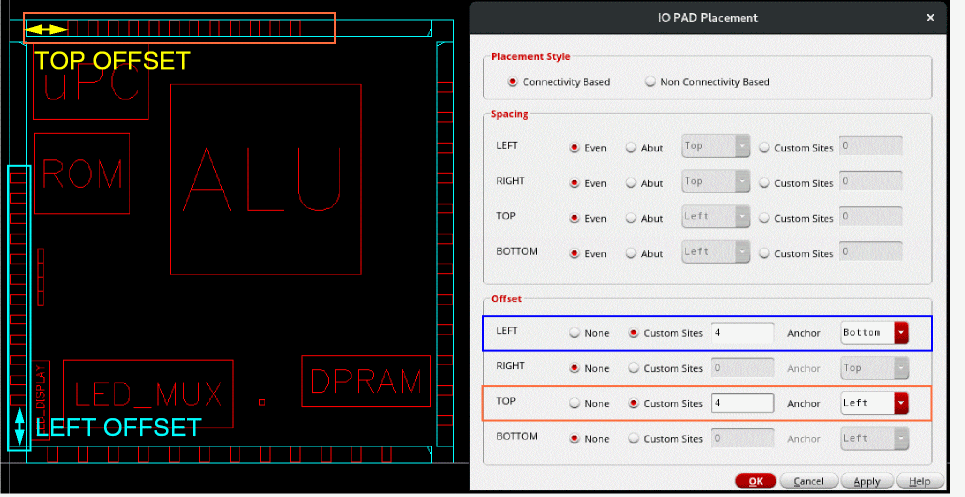

Placing I/O PADs
PAD placement is an essential part of the IO placement methodology. Ensure that row creation is complete in IO Placer, and IO rows are present before running PAD placement.
-
Choose Floorplan – I/O Placer – I/O PAD Placer.
In Layout EXL and higher tiers, choose Plan – I/O Planning – I/O Pad Placer.
The IO PAD Placement form is displayed.
- In the Style section, you can set the placement style to Connectivity Based and Non-Connectivity Based. By default, Connectivity Based is selected.
-
In the Spacing section, select a spacing constraint to define the spacing between PADs on per-row basis.
- Even: Distributes IO PADs in the given IO row.
- Abut: Lets you select an edge to which the instances are to be abutted in the designated row. The various abutment options are LEFT, RIGHT, TOP, and BOTTOM.
- Custom Sites: Lets you define spacing in terms of the number of sites between adjacent IO PADs. The placement engine places IO PADs at these sites.You can set the spacing between cells by selecting the cells, creating an alignment constraint in the constraint manager, and setting the pitch value in the constraint.
-
In the Offset section, define the position of the first IO PAD cell in each direction—LEFT, RIGHT, TOP, and BOTTOM.
None is the default behavior, where there is no offset. The specified Spacing value is applied as the offset.
To specify a different offset, select Custom Sites and specify the value. Also set Anchor to the corner from which offset must be calculated.
In the following example, custom offset values are applied along the LEFT and TOP edges. The anchor corners are specified.
 - Click Apply.
The PADs are placed on the periphery of the design in the IO rows as per your specifications.
Related Topics
Return to top